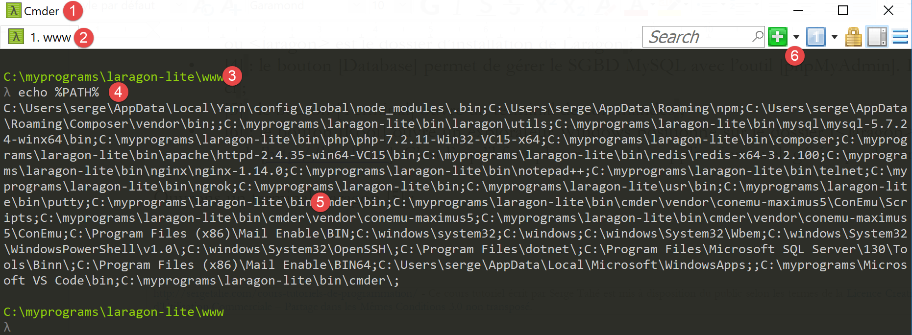
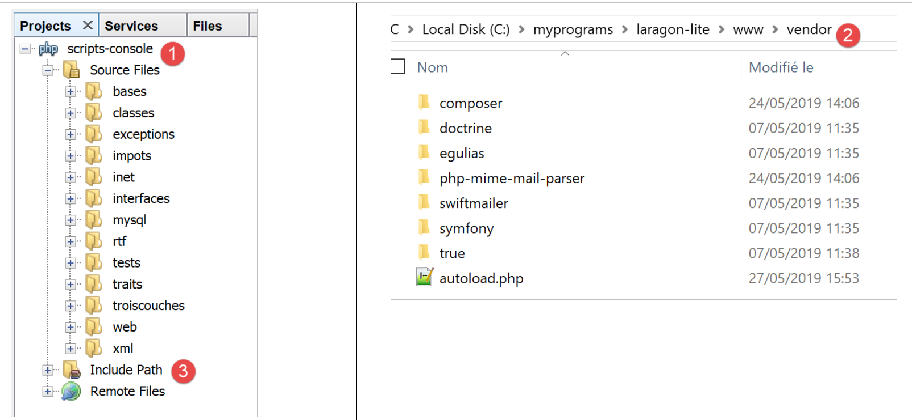
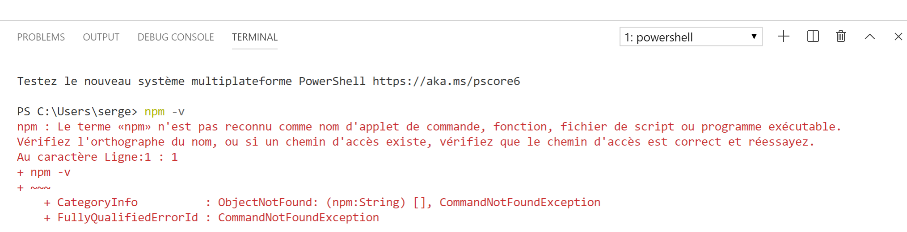
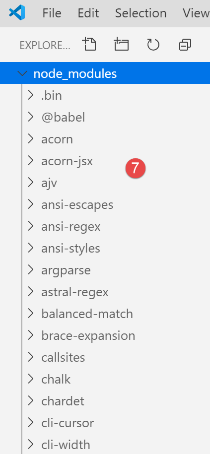
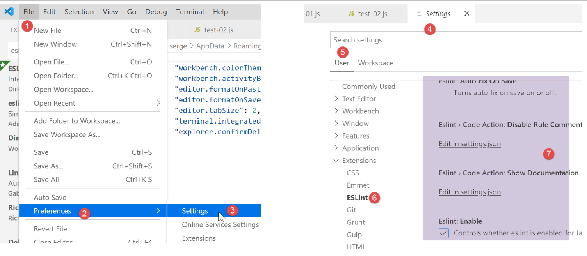
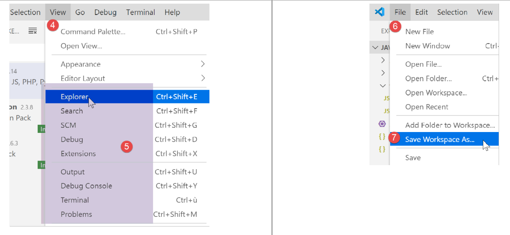

2. تثبيت بيئة العمل
سنستخدم الأدوات التالية (في نظام Windows 10 x 64 بت):
- [Laragon] لتشغيل خادم الويب PHP؛
- [Netbeans] لتعديل الكود PHP؛
- [Visual Studio Code] لكتابة أكواد جافا سكريبت؛
- [node.js] لتنفيذها؛
- [npm] لتنزيل وتثبيت مكتبات جافا سكريبت التي سنحتاجها؛
2.1. بيئة العمل لخادم الويب
تمت كتابة البرامج النصية PHP واختبارها في البيئة التالية:
- بيئة خادم ويب Apache / SGBD MySQL / PHP 7.3 تسمى Laragon؛
- بيئة تطوير Netbeans 10.0 IDE؛
2.1.1. تثبيت Laragon
Laragon عبارة عن حزمة تضم عدة برامج:
- خادم ويب Apache. سنستخدمه لكتابة نصوص برمجية للويب في PHP؛
- SGBD MySQL؛
- لغة البرمجة النصية PHP؛
- خادم Redis الذي ينفذ ذاكرة تخزين مؤقتة لتطبيقات الويب:
يمكن تنزيل Laragon (مارس 2019) من العنوان التالي:


- ينتج عن التثبيت [1-5] الشجرة التالية:

- في [6] مجلد التثبيت لـ PHP؛
يؤدي تشغيل [Laragon] إلى عرض النافذة التالية:

- [1]: القائمة الرئيسية لـ Laragon؛
- [2]: الزر [Start All] يطلق خادم الويب Apache و SGBD MySQL؛
- [3]: يعرض الزر [WEB] صفحة الويب [http://localhost] التي تتوافق مع الملف PHP [<laragon>/www/index.php] حيث <laragon> هو مجلد تثبيت Laragon؛
- [4]: يتيح الزر [Database] إدارة SGBD و MySQL باستخدام الأداة [phpMyAdmin]. يجب تثبيت هذا الزر مسبقًا؛
- [5]: يفتح الزر [Terminal] محطة أوامر؛
- [6]: يفتح الزر [Root] مستكشف Windows موجهًا إلى المجلد [<laragon>/www] الذي يمثل جذر موقع الويب [http://localhost]. وهذا هو المكان الذي يجب وضع جميع تطبيقات الويب التي يديرها خادم Apache الخاص بـ Laragon فيه؛
لنفتح محطة طرفية Laragon [5]:

- في [1]، نوع المحطة الطرفية. تتوفر ثلاثة أنواع من المحطات الطرفية في [6]؛
- في [2, 3]: المجلد الحالي؛
- في [4]، نكتب الأمر [echo %PATH%] الذي يعرض قائمة المجلدات التي تم استكشافها أثناء البحث عن ملف قابل للتنفيذ. جميع المجلدات الرئيسية في Laragon مضمنة في مسار الملفات التنفيذية هذا، وهو ما لن يكون الحال إذا فتحنا نافذة أوامر [cmd] في Windows. في هذا المستند، عندما يُطلب منا كتابة أوامر لتثبيت برنامج معين، يتم كتابة هذه الأوامر عادةً في محطة Laragon؛
2.1.2. تثبيت IDE Netbeans 10.0
يمكن تنزيل IDE Netbeans 10.0 من العنوان التالي (مارس 2019):
https://netbeans.apache.org/download/index.HTML

الملف الذي تم تنزيله هو ملف مضغوط (zip) يكفي فقط فك ضغطه. بمجرد تثبيت Netbeans وتشغيله، يمكن إنشاء أول مشروع PHP.

- في [1]، اختر الخيار File / New Project؛
- في [2]، اختر الفئة [PHP]؛
- في [3]، اختر نوع المشروع [PHP Application]؛

- في [4]، قم بتسمية المشروع؛
- في [5]، اختر مجلدًا للمشروع؛
- في [6]، اختر إصدار PHP الذي تم تنزيله؛
- في [7]، اختر الترميز UTF-8 للملفات PHP؛
- في [8]، اختر الوضع [Script] لتنفيذ البرامج النصية PHP في وضع سطر الأوامر. اختر [Local WEB Server] لتنفيذ البرنامج النصي PHP في بيئة ويب؛
- في [9,10]، حدد دليل تثبيت مترجم PHP من حزمة Laragon:

- اختر [Finish] لإنهاء معالج إنشاء المشروع PHP؛

- في [11]، يتم إنشاء المشروع باستخدام البرنامج النصي [index.php]؛
- في [12]، يتم كتابة برنامج نصي PHP بسيط؛
- في [13]، يتم تنفيذ [index.php]؛

- في [14]، تظهر النتائج في نافذة [output] في Netbeans؛
- في [15]، يتم إنشاء برنامج نصي جديد؛
- في [16]، البرنامج النصي الجديد؛
يمكن للقارئ إنشاء جميع البرامج النصية التالية في مجلدات مختلفة من نفس المشروع PHP. تتوفر أكواد مصدر البرامج النصية في هذا المستند في شكل شجرة Netbeans التالية:

يتم وضع البرامج النصية في هذا المستند في شجرة المشروع [scripts-console] [1]. سنستخدم أيضًا مكتبات PHP التي سيتم وضعها في المجلد [<laragon-lite>/www/vendor] [2] حيث <laragon-lite> هو مجلد تثبيت برنامج Laragon. لكي يتعرف Netbeans على مكتبات [2] كجزء من مشروع [scripts-console]، علينا تضمين المجلد [vendor] [2] في فرع [Include Path] [3] للمشروع. سنقوم بتكوين Netbeans بحيث يتم تضمين المجلد [<laragon-lite>/www/vendor] [2] في أي مشروع جديد PHP وليس فقط في المشروع [scripts-console]:

- في [1-2]، ننتقل إلى خيارات Netbeans؛
- في [3-4]، نقوم بتكوين خيارات PHP؛
- في [5-7]، نقوم بتكوين [Global Include Path] من PHP: يتم تضمين المجلدات المحددة في [7] تلقائيًا في [Include Path] لأي مشروع PHP؛

- في [9]، يمكن الوصول إلى خصائص الفرع [Include Path]؛
- في [10-11]، المكتبات الجديدة التي تم استكشافها بواسطة Netbeans. يقوم Netbeans باستكشاف كود PHP لهذه المكتبات ويحفظ فئاتها وواجهاتها ووظائفها... من أجل تقديم المساعدة للمطور؛

- في [12]، يستخدم رمز ما الفئة [PhpMimeMailParser\Parser] من المكتبة [vendor/php-mime-mail-parser]؛
- في [13]، يقترح Netbeans طرق هذه الفئة؛
- في [14-15]، يعرض Netbeans وثائق الطريقة المحددة؛
مفهوم [Include Path] هنا خاص بـ Netbeans. PHP لديه هذا المفهوم أيضًا، لكنهما مفهومان مختلفان في الأساس.
الآن وقد تم تثبيت بيئة العمل، يمكننا البدء في التعرف على أساسيات PHP.
2.2. بيئة العمل لـ JavaScript
يمكن تثبيت هذه الأدوات من Laragon (انظر الفقرة الرابط):

في [4]، نقوم بتثبيت [node.js]. بمجرد انتهاء التثبيت، نفتح محطة Laragon (انظر الفقرة الرابط) ونطلب إصدار [node.js] المثبت (1) وكذلك إصدار [npm] (2):

بعد ذلك، نقوم بتثبيت Visual Studio Code الذي يُسمى غالبًا [code] أو [VSCode] [3-6]. وبمجرد الانتهاء من ذلك، يمكننا تشغيل أداة التطوير هذه:


2.2.1. تكوين Visual Studio Code
نوضح الآن كيف قمنا بتكوين [VSCode] حتى يفهم القارئ لقطات الشاشة التي ستظهر من حين لآخر. وللقارئ الحرية في تكوين [VSCode] كما يشاء. بل يمكنه حتى تثبيت بيئة العمل المفضلة لديه. فهذا الأمر لا يهم بالنسبة لما سنقوم به لاحقًا.
أولاً، نغير مظهر نافذة [VSCode] للحصول على خلفية فاتحة بدلاً من السوداء:

ثم نخفي الشريط الأيسر [1-2] الذي تتوفر عناصره أيضًا في القائمة. في [3-6]، نطلب تنسيق الكود عند كل حفظ للملف وعند كل عملية نسخ/لصق.

بعد حفظ التكوين [Ctrl-S]، يمكننا إغلاق النافذة [Settings] [7]. يمكن العودة في أي وقت إلى تكوين [VSCode] [8-10]:

يتم حفظ هذه الإعدادات في ملف [settings.json] الذي يمكن تحريره مباشرة. لنفتح نافذة الإعداد [Settings] كما رأينا:

في [4]، يمكن تحرير الملف [settings.json] مباشرةً:

- في [1]، مسار الملف [settings.json]. إحدى طرق العودة إلى الإعدادات الافتراضية هي حذف هذا الملف؛
- في [2]، الإعدادات التي قمنا بها للتو؛
الآن، لنفتح محطة طرفية داخل [VSCode] [1-2]:

- في [3]، نوع المحطة الطرفية المفتوحة، هنا PowerShell؛
- في [4]، يمكن كتابة أوامر Windows؛
- في [6]، يمكن فتح محطات طرفية أخرى؛
- في [5]، قائمة المحطات الطرفية المفتوحة؛
- في [7]، يتم إغلاق المحطة الطرفية النشطة؛
سنستخدم محطة [VSCode] لتثبيت حزم (مكتبات) Javascript باستخدام أداة [npm] (Node Package Manager). لنطلب، كما فعلنا سابقًا في محطة Laragon، إصدار [npm] المثبت:

نلاحظ أن الأمر [npm] لم يتم التعرف عليه. وهذا يعني أنه لا ينتمي إلى PATH (قائمة المجلدات التي يجب استكشافها للبحث عن ملف قابل للتنفيذ، وهنا [npm]) في المحطة الطرفية. يمكن معرفة PATH المستخدم من قبل المحطة الطرفية:

لا يوجد الملف القابل للتنفيذ [npm] ضمن هذه المجلدات. مثل الأدوات الأخرى التي تم تثبيتها بواسطة Laragon، يوجد في مجلد [<laragon>\bin] الخاص بـ Laragon، وبشكل أكثر تحديدًا في مجلد [nodejs] [4-6].

لتشغيل [VSCode] والوصول إلى [npm]، سنقوم بتشغيل [VSCode] من محطة Laragon. عند تشغيله بهذه الطريقة، سيرث [VSCode] ملف PATH من محطة Laragon التي تحتوي بدورها على مجلد الملفات القابلة للتنفيذ [node] و [npm]:

- في [1]: نكتب الأمر [path]؛
- في [2]: قائمة مجلدات PATH. نرى فيها المجلد [node-v10] [2]، مما يضمن لنا العثور على الملفات التنفيذية [node] و [npm]؛
يتم تشغيل [VSCode] من محطة Laragon باستخدام الأمر [code]:

- في [2]، يتم فتح محطة طرفية PowerShell في [VSCode]؛
- في [3-4]، نرى أن الملفات التنفيذية [node] و [npm] متاحة؛
ملاحظة: لا يجب إغلاق محطة Laragon التي أطلقت بيئة التطوير [VSCode]، وإلا فسيتم إغلاق VSCode نفسه.
سنقوم بإجراء تكوين أخير: سنقوم بتغيير المحطة الطرفية الافتراضية لـ [VSCode]:


يتم تحديث الملف [settings.json] على الفور:

الآن، لنفتح محطة جديدة [VSCode] [1]:

- في [2]، محطة طرفية [cmd] (وليس PowerShell)؛
- في [3]، يعطي الأمر [path] القيمة PATH للمحطة الطرفية؛
- في [4]، يمكن رؤية مجلد الملفات التنفيذية [node] و [npm] بوضوح
2.2.2. إضافة ملحقات إلى Visual Studio Code
لنقم بإنشاء ملف Javascript باستخدام [VSCode]:


- في [3-4]، نقوم بإنشاء مجلد؛
- في [5]، نجعله المجلد الحالي لـ [VSCode]؛
- في [6]، نفتح محطة طرفية؛
- في [7]، نرى أننا في المجلد المختار. ستتم العمليات التالية في هذا المجلد؛

- في [1-3]: يتم إنشاء مجلد جديد؛
- في [4]: نضيف ملفًا إلى هذا المجلد؛

- في [5-7]: نقوم بإنشاء برنامج جافا سكريبت الأول؛

- في [8-9]: يتم تشغيل برنامج جافا سكريبت؛
- تظهر النتيجة في وحدة التحكم في التنفيذ [10]. نرى في [11] الأمر الذي تم تنفيذه: التطبيق [node] هو الذي نفذ البرنامج النصي [test-01.js]. وقد تم ذلك لأن هذا الملف القابل للتنفيذ موجود في PATH من [VSCode]، وإلا لكانت ظهرت رسالة خطأ تشير إلى أن الأمر [node] غير معروف؛
لنقوم بنفس الطريقة لتنفيذ البرنامج النصي الثاني [test-02.js]:

- في [1-3]، نحدد البرنامج النصي الجديد. تطلب التعليمات [use strict] في السطر 1 إجراء تحقق صارم من صحة بناء الجملة. في هذا السياق، يجب إعلان أي متغير باستخدام إحدى الكلمات الرئيسية [let, const, var]. وهذا ليس هو الحال بالنسبة للمتغير [x] في السطر 2؛
- عند تنفيذ هذا الرمز بواسطة [Ctrl-F5]، نحصل على الخطأ [5]. من الممكن الحصول على تنبيه بهذا النوع من الأخطاء قبل التنفيذ. وهذا هو الأفضل. سنقوم بأمرين:
- تثبيت مكتبة تسمى [eslint] باستخدام [npm]، والتي تتحقق من أن صيغة البرنامج النصي تتوافق مع المعيار ECMAScript 6؛
- تثبيت ملحق لـ Visual Studio Code، يُسمى أيضًا ESLINT، والذي يسهل استخدام مكتبة [eslint] داخل [VSCode]؛
لنقم أولاً بتثبيت مكتبة جافا سكريبت [eslint] باستخدام أداة [npm]. لتثبيت مكتبة (يُطلق عليها حزمة) [npm]، يجب معرفة اسمها الدقيق. إذا لم يكن الأمر كذلك، يمكننا الذهاب إلى موقع [npm] على URL (2019) [https://www.npmjs.com/]:

- في [3]، الحزم التي تبدأ بـ [esl]؛
- في [4-6]، نجد الحزمة [eslint]؛

- في [7]، الأمر [npm] لتثبيت الحزمة [eslint]؛
- في [8]، تكوين الحزمة؛
- في [9]، استخدامه للتحقق من صحة بناء جملة نص برمجي جافا سكريبت؛
نقوم بتثبيت الحزمة [eslint] في نافذة [Terminal] من [VSCode]. أولاً، علينا إنشاء ملف [package.json] في جذر مجلد العمل الخاص بـ [VSCode]. سيحتوي هذا الملف على قائمة الحزم jS المستخدمة من قبل مشروع [VSCode]:

- في [1]، انقر بزر الماوس الأيمن في مستكشف المشروع (وليس على مجلد الاختبارات)؛
- في [3-4]، يتم إنشاء الملف [package.json] في جذر المشروع [javascript]، على نفس مستوى المجلد [tests] (ولكن ليس في [tests])؛
- في [4-6]، نضع في الملف [package.json] كائنًا فارغًا jSON؛
ثم نفتح محطة طرفية [VSCode] لتثبيت [eslint]:

- في [2]، نكون في جذر مشروع [javascript]؛
- في [3]، الأمر الذي يقوم بتثبيت الحزمة [eslint]؛
- بعد التنفيذ،
- في [4-5]، تم تعديل الملف [package.json]. في السطر 3، نجد إصدار [eslint] المثبت. في السطر 2، يتوافق [devDependencies] مع وسيطة [--save-dev] للتثبيت. يعني هذا الوسيط أن التبعية المثبتة يجب أن تُدرج في الملف [package.json] كعنصر في الخاصية [devDependencies]. تسرد هذه الخاصية تبعية المشروع المطلوبة في وضع التطوير ولكن ليس في وضع الإنتاج. في الواقع، نحتاج إلى التبعية [eslint] فقط في مرحلة التطوير للتحقق من أن الكود المكتوب يتوافق مع المعيار ECMAScript؛
- في [6]، ظهر ملف [node_modules] في المشروع. هذا هو الملف الذي يتم فيه تثبيت تبعيات المشروع؛

- في [7]، جزء من الحزم المثبتة. هذه الحزم كثيرة جدًا. في الواقع، لم يتم تثبيت الحزمة [eslint] فحسب، بل تم أيضًا تثبيت جميع الحزم التي تعتمد عليها؛

- [1-2]، في محطة طرفية [VSCode] يتم إصدار أمر تكوين الحزمة [eslint]. سيطرح هذا الحزمة أسئلة متنوعة [3] لمعرفة كيفية استخدام [eslint]. في حالة الشك، اترك الخيارات المقترحة بشكل افتراضي. لاختيار خيار، استخدم أسهم الأعلى والأسفل على لوحة المفاتيح لاختيار الخيار ثم قم بتأكيده؛
- في [4]، تم إنشاء ملف [.eslintrc.js] في جذر المشروع؛
- في [6]، محتوى الملف. يمكنك نسخ المحتوى إلى ملفك الخاص؛
module.exports = {
"env": {
"browser": true,
"es6": true
},
"extends": "eslint:recommended",
"globals": {
"Atomics": "readonly",
"SharedArrayBuffer": "readonly"
},
"parserOptions": {
"ecmaVersion": 2018,
"sourceType": "module"
},
"rules": {
}
};
كل هذا لا يكفي للإبلاغ عن أخطاء الملف [test-02.js]:

- يجب كتابة الأمر [2-3] حتى يتم تحليل الملف [tests/test-02.js]؛
- في [4]، تم الكشف عن خطأ في المتغير غير المعلن؛
سنضيف إلى [VSCode] ملحقًا سيسمح برؤية أخطاء جافا سكريبت في الوقت الفعلي. يعتمد هذا الملحق على الحزمة [eslint] التي قمنا بتثبيتها:

- في [3-5]، نقوم بتثبيت الملحق المسمى [ESLint]؛

- إلى [1]، وهي صفحة معلومات عن الملحق الذي تم تثبيته حديثًا؛
- في [2]، نرى أن وضع التحقق لـ [ESLint] هو [type]، مما يعني أن صيغة نصوص jS سيتم التحقق منها أثناء كتابة النص؛
يمكن تكوين ESLint عبر ملف التكوين العام لـ [VSCode]:

- في [6-7]، تكوين [ESLint]. هنا يمكنك تعديله؛
لنعد الآن إلى ملف [test-02.js]:

- في [3-4]، يتم الآن الإبلاغ عن الأخطاء في المتغير [x]؛
- إلى [5]: عدد الأخطاء ESLint في الملف؛
- في [6]، يشير إلى وجود ملفات خاطئة في المجلد [tests]؛
إذا تم تصحيح الخطأ، تختفي تحذيرات ESLint:

لنقم الآن بتثبيت ملحق يسمى [Code Runner]:

- بمجرد تثبيت الملحق [Code-Runner] [1-5]، يمكن تهيئته باستخدام [6-7] (أعلاه)؛

- في [1-2]، عناصر تكوين [Code-Runner]؛
- إلى [3]، نطلب تنظيف محطة الإخراج قبل كل عملية تنفيذ؛
- في [4]، يتم تحديد موقع العنصر [Executor Map] الذي يسرد أدوات التنفيذ لمختلف اللغات؛
- في [5-6]، يتم نسخ التكوين إلى الحافظة؛
- في [7-8]، يتم تعديل الملف [settings.json]؛

- في [2]، نضيف الفاصلة بعد العنصر الأخير في الملف [settings.json] [1]؛
- في [3]، نلصق ما قمنا بنسخه في [5-6] سابقًا: وهي قائمة الأوامر التي تسمح بتنفيذ اللغات المختلفة التي يدعمها [VSCode]؛
- في [4]، الأمر الذي يسمح بتنفيذ ملفات جافا سكريبت. لا يعمل هذا الأمر إلا إذا كان [node] موجودًا في PATH الخاص بـ [VSCode]. إذا لم يكن الأمر كذلك، يمكن وضع المسار الكامل للملف القابل للتنفيذ [5]؛
بعد ذلك، قم بحفظ الإعدادات (Ctrl-S). باستخدام الامتداد [Code Runner]، يمكن تشغيل ملفات جافا سكريبت بنقرة يمين على الرمز [6] (أعلاه):

2.2.3. بعض الأوامر المفيدة [VSCode]
- لتنسيق الكود، انقر بزر الماوس الأيمن عليه [1]؛
- لإغلاق النوافذ المفتوحة، انقر بزر الماوس الأيمن على عناوينها [2-3]؛

- لعرض نافذة معينة [4-5] ؛
- لحفظ مشروعك (مساحة العمل) [6-9] ؛
- لحفظ مشروع [10-11]؛


- لفتح مشروع [11-16]:

- للاطلاع على الامتدادات المثبتة [19-20]:

لدينا الآن أدوات جيدة للتطوير باستخدام جافا سكريبت. سنقوم الآن بتقديم هذه اللغة باستخدام مقتطفات قصيرة من الكود. نظرًا لأن هذا العرض يأتي بعد دورة PHP، فسنقوم أحيانًا بإجراء مقارنات بين هاتين اللغتين لإبراز الاختلافات بينهما.